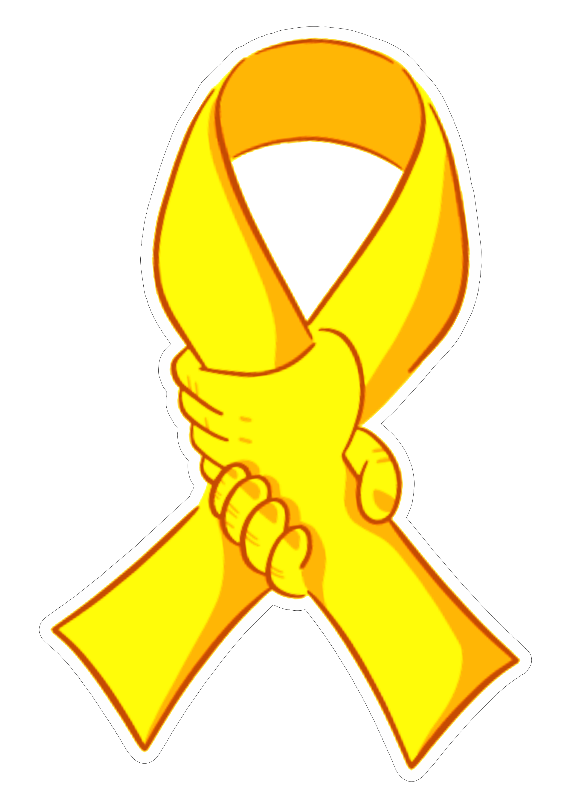

O Setembro Amarelo é um momento crucial para refletir sobre a saúde mental e a importância de buscar ajuda. Muitas pessoas enfrentam desafios profundos, mas a superação é possível. Ao delves nas histórias de quem passou por momentos difíceis e encontrou apoio, percebemos que a resiliência é uma força poderosa. O ultimate objetivo é promover a empatia, a escuta e a compreensão, lembrando que nunca estamos sozinhos nessa jornada. Cada passo dado em busca de ajuda é uma vitória.
Setembro Amarelo é uma campanha de conscientização sobre a prevenção do suicídio e a promoção da saúde mental. O objetivo é estimular o diálogo aberto sobre os problemas emocionais, encorajar as pessoas a buscar ajuda e lembrar que não estão sozinhas. Além disso, a campanha visa combater o estigma relacionado ao sofrimento mental, promovendo empatia e apoio entre as pessoas.
O caso de Kevin Hines, que sobreviveu a uma tentativa de suicídio ao pular da Ponte Golden Gate, nos Estados Unidos, em 2000. Ele enfrentava transtornos mentais e sua história gerou grande conscientização sobre a prevenção do suicídio. Kevin se tornou um defensor da saúde mental, compartilhando sua experiência para ajudar outras pessoas que estão passando por dificuldades. O impacto de sua história e de outras semelhantes ajudou a aumentar a visibilidade sobre a importância de tratar a saúde mental e de oferecer suporte a quem precisa.
Setembro Amarelo foi criado no Brasil em 2015, inspirado em iniciativas internacionais de prevenção ao suicídio. A escolha do mês de setembro se deu em razão do Dia Mundial de Prevenção do Suicídio, que ocorre em 10 de setembro. O projeto é uma parceria entre o CVV (Centro de Valorização da Vida) e outras instituições.
Origem Internacional: O mês de setembro é reconhecido globalmente como um período de conscientização sobre a prevenção do suicídio. O Dia Mundial de Prevenção do Suicídio é celebrado em 10 de setembro.
Campanhas e Atividades: Durante o mês, diversas instituições promovem palestras, workshops e atividades de sensibilização para discutir a saúde mental e o suicídio
A cor amarela simboliza a luz e a esperança, representando a valorização da vida. A campanha busca aumentar a conscientização sobre a saúde mental, incentivar o diálogo sobre o suicídio e oferecer recursos para quem precisa de apoio. Desde sua criação, o Setembro Amarelo tem ganhado força, promovendo diversas ações, como palestras, debates e campanhas em mídias sociais.
Setembro Amarelo é um lembrete de que a vida é preciosa e que cada conversa pode ser a luz que alguém precisa para continuar.